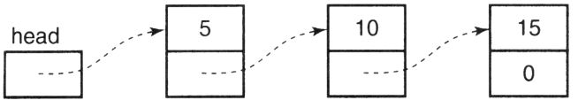

The elements of an array are stored in contiguous locations in memory. When an array is declared, its memory is allocated at compile time. However, you can also allocate the memory at runtime with dynamic memory allocation. In this chapter, we will examine the differences between these techniques and see when and how to use dynamic memory allocation.
When declaring arrays, the array size must be given as a compile-time constant. Often, the actual size needed for the array is not known until run time because the amount of space depends upon the input data. For example, a program that computes student grades and averages might need to store data for all of the students in a class, but different classes will have different numbers of students. In these situations, the usual approach is to declare an array that is as big as it ever will need to be.
TIP
This approach has the advantage of being simple, but it has several disadvantages. First, such declarations build an artificial limitation into the program, making it incapable of handling problems larger than the size used in the declaration. The obvious solution is to make the array even bigger, but the second problem then becomes even worse. Nearly all of the memory used for a huge array is wasted when the number of elements actually required is small. A third disadvantage is that the program must respond in a reasonable way when there is more input than the array can hold. It should not fail with an exception, and it must not print answers that look valid but in fact are wrong. The required logic is simple enough, but the assumption that "the array will never overflow" makes it very tempting to not bother implementing it.
The C library provides two functions, malloc and free, that perform dynamic memory allocation and deallocation. These functions maintain a pool of available memory. When a program needs additional memory, it calls malloc, which takes an appropriate piece of memory from the pool and returns a pointer to this block of memory to the program. The memory is not initialized in any way. If it is important that the memory be initialized, you must either do it yourself or use the calloc function (described in the next section). When a previously allocated piece of memory is no longer needed, free is called to return it to the pool for later reuse.
The prototypes for these two functions are shown below, and are in stdlib.h.
void *malloc( size_t size );
void free( void *pointer );The argument to malloc is the number of bytes (characters) of memory that are needed [1] . If the desired amount of memory is available, malloc returns a pointer to the beginning of the allocated block.
malloc allocates contiguous blocks of memory. For example, a request for 100 bytes will be satisfied with 100 adjacent bytes, never with two or more separate chunks of memory. Also, malloc may actually allocate a chunk of memory slightly larger than requested. However, this behavior is implementation dependent, so you should not count on getting more memory than you requested.
What if the pool of memory is empty, or it does not contain a big enough block? In this case, malloc calls the operating system to obtain more memory and begins allocating pieces from this new chunk. If the operating system is unable to give more memory to malloc, then a NULL pointer is returned. Thus it is vital that the pointer returned by every call to malloc be checked to ensure that it is not NULL.
The argument to free must either be NULL or a value that was previously returned from malloc, calloc, or realloc (described below). Passing a NULL argument to free has no effect.
How does malloc know whether you want to store integers, floating-point values, structures, or arrays in the memory you've requested? It doesn't—malloc returns a pointer of type void * for precisely this reason. The Standard states that a void * pointer can be converted to any other pointer type. Some compiler though, especially older ones, may require you to use a cast for the conversion.
On machines with boundary alignment requirements, the memory returned by malloc will always begin on a boundary that is suitable for the data type with the most stringent alignment requirements.
There are two additional memory allocation functions, calloc and realloc. Their prototypes are shown below.
void *calloc( size_t num_elements,
size_t element_size );
void realloc( void *ptr, size_t new_size );calloc also allocates memory. The major difference between malloc and calloc is that the latter initializes the memory to zero before returning a pointer to it. This initialization is often convenient, but is a waste of time if the first thing your program does is to store values into the array. A minor difference between calloc and malloc is the way the amount of memory is requested, calloc takes the number of elements desired and the number of bytes in each element. From these values it computes the total number of bytes needed.
The realloc function is used to change the size of a previously allocated block of memory. You can make a block larger or smaller with this function If a block is made larger, its old contents remain unchanged and additional memory is added to the end of the block. The new memory is not initialized in any way. If the block is made smaller, then memory is taken off of the end. What remains of the original contents are unchanged.
If the original block cannot be resized, realloc will allocate a different block of the right size and copy the contents of the old block to the new one. Thus, you must not use the old pointer to the block after a call to realloc. Use the new pointer that is returned instead.
Finally, if the first argument to realloc is NULL, then it behaves exactly like malloc.
Here is an example that obtains a chunk of memory from malloc.
The symbol NULL is defined in stdio.h as the literal constant zero. It acts as a visual reminder that the value being tested is a pointer type rather than an integer.
If there was memory available, we will now have a pointer to 100 bytes. On a machine with 4-byte integers, the memory will be treated as an array of 25 integers because pi is a pointer to an integer.
TIP
If your goal is to get enough memory for 25 integers, though, here is a much better technique for obtaining it.
pi = malloc( 25 * sizeof( int ) );This approach is better because it is portable. It works properly even on machines with different size integers.
Now that you have a pointer, how do you use the memory? Of course you can use indirection and pointer arithmetic to access different integer locations in this array, as in this loop, which sets each element of the newly allocated array to zero:
As you have seen, you can use a subscript on the pointer as well. This second loop performs the same work as the previous one.
There are many errors that can occur in programs that use dynamic memory allocation. These include dereferencing NULL pointers, going outside the bounds of the memory that was allocated, freeing memory blocks that were not dynamically allocated, attempting to free a portion of a dynamic block, and continuing to use dynamic memory after it has been freed.
CAUTION!
The most common error with dynamic memory allocation is forgetting to check whether the requested memory was allocated. Program 11.1 presents a technique that makes this error checking almost foolproof. The MALLOC macro takes the number of elements and type of each element, computes the total number of bytes needed, and calls alloc to obtain the memory [2] . alloc calls malloc and then checks to make sure that the pointer returned was not NULL.
The final piece of this puzzle is the very first #define. It prevents accidental calls directly to malloc by substituting junk into the program. If an accidental call is made, the program will not compile due to syntax errors. The #undef is needed in alloc so that it can call malloc without error.
CAUTION!
The second biggest source of error with dynamically allocated memory is going outside of the bounds of the memory that was allocated. For example, if you have obtained an array of 25 integers, accessing elements with subscripts less than zero or greater than 24 can cause two types of problems.
The first problem is obvious; the memory being accessed might be holding some other variable. Changing it here will destroy the variable, and changing the variable will destroy any value you store here. These kinds of bugs are very difficult to track down.
The second problem is not so obvious. Some implementations of malloc and free keep the pool of available storage as a linked list. Modifying location outside the bounds of allocated memory can corrupt this list, which can cause exceptions that terminate the program.
/*
** Definitions for a less error-prone memory allocator.
*/
#include < stdlib.h>
#define malloc DON'T CALL malloc DIRECTLY!
#define MALLOC(num,type) (type *)alloc( (num) * sizeof(type) )
extern void *alloc( size_t size );Program 11.1a Error checking allocator: interface
alloc.h
/*
** Implementation for a less error-prone memory allocator.
*/
#include <stdio.h>
#include "alloc.h"
#undef malloc
void *
alloc( size_t size )
{
void *new_mem;
/*
** Ask for the requested memory, and check that we really
** got it.
*/
new_mem = malloc( size );
if( new_mem == NULL ){
printf( "Out of memory!\n" );
exit( 1 );
}
return new_mem;
}Program 11.1b Error checking allocator: implementation
alloc.c
/*
** A program that uses the less error-prone memory allocator.
*/
#include "alloc.h"
void
function()
{
int *new_memory;
/*
** Get space for a bunch of integers
*/
new_memory = MALLOC( 25, int );
/* ... */
}Program 11.1c Using the error checking allocator
a_client.c
When a program that uses dynamically allocated memory fails, it is tempting to blame the problems on malloc and free. They are rarely the culprit, though. In practice, the problem is nearly always in your program and is frequently caused by accessing data outside of the allocated memory.
CAUTION!
Different errors can occur when using free. The pointer passed to free must be a pointer that was obtained from malloc, calloc, or realloc. Calling free with a pointer to memory that was not dynamically allocated can cause the program to terminate either right away or at some later time. Similar problems can be caused by attempting to free only a portion of a dynamically allocated block, like this:
Freeing a portion of a block is not allowed; the whole block must be freed. However, the realloc function can make a dynamically allocated chunk of memory smaller, effectively freeing the end of it.
CAUTION!
Finally, you must be careful not to access memory that has been free'd. This warning may seem obvious, but there is a subtle problem here after all. Suppose copies are made of the pointer to a dynamically allocated block, and these copies are sent off to many different parts of the program. It is difficult to make sure that none of these other areas in the program use their copies of the pointer after the memory has been freed. Conversely, you must be sure that all parts of the program are finished using a chunk of memory before freeing it.
11.5.1 Memory Leaks
Dynamically allocated memory should be freed when it is no longer needed so that it can be reused later for other purposes. Allocating memory but not freeing it later causes a memory leak. With operating systems that share a common pool of memory among all executing programs, memory leaks dribble away the available memory so that eventually there isn't any left. Rebooting the computer is the only recovery for this situation.
Other operating systems keep track of which pieces of memory each program currently has, so that when a program terminates all of the memory that it had allocated but had not freed is returned to the pool. Memory leaks are a serious problem even on these systems, because a program that continually allocates memory without ever freeing any will eventually exhaust the available memory. At this point, the defective program will not be able to continue executing, and its failure may result in the loss of the work completed so far.
A common use for dynamic memory allocation is obtaining space for arrays whose sizes are not known until run time. Program 11.2 reads a list of integers, sorts them into ascending sequence, and prints the list.
/*
** Read, sort, and print a list of integer values.
*/
#include <stdlib.h>
#include <stdio.h>
/*
** Function called by 'qsort' to compare integer values
*/
int
compare_integers( void const *a, void const *b )
{
register int const *pa = a;
register int const *pb = b;
return *pa > *pb ? 1 : *pa < *pb ? -1 : 0;
}
int
main()
{
int *array;
int n_values;
int i;
/*
** See how many numbers there will be.
*/
printf( "How many values are there? " );
if( scanf( "%d", &n_values ) != 1 || n_values <= 0 ){
printf( "Illegal number of values.\n" );
exit( EXIT_FAILURE );
}
/*
** Get memory to store them.。
*/
array = malloc( n_values * sizeof( int ) );
if( array == NULL ){
printf( "Can't get memory for that many values.\n" );
exit( EXIT_FAILURE );
}
/*
** Read the numbers.
*/
for( i = 0; i < n_values; i += 1 ){
printf( "? " );
if( scanf( "%d", array + i ) != 1 ){
printf( "Error reading value #%d\n", i );
free( array );
exit( EXIT_FAILURE );
}
}
/*
** Sort the values.
*/
qsort( array, n_values, sizeof( int ), compare_integers );
/*
** Print them out.
*/
for( i = 0; i < n_values; i += 1 )
printf( "%d\n", array[i] );
/*
** Free the memory and exit.
*/
free( array );
return EXIT_SUCCESS;
}Program 11.2 Sort a list of integers
sort.c
Memory to hold the list is dynamically allocated so that when you are writing the program you don't have to guess how many values the user might wish to sort. The only limit on the number of values that can be sorted is the amount of dynamic memory available to the program. When small lists are sorted, though, only as much memory as is actually needed is allocated, so memory is not wasted.
Now consider a program that reads strings. If you don't know the length of the longest string in advance you cannot use an ordinary array as a buffer. Instead, use dynamically allocated memory. When you find an input line that doesn't fit, reallocate a larger buffer and read the remainder of the line into it. The implementation of this technique is left as a programming exercise.
/*
** Make a copy of a string in dynamically allocated memory. Note:
** caller is responsible for checking whether the memory was
** allocated! This allows the caller to respond to an error in
** any way they wish.
*/
#include < stdlib.h>
#include < string.h>
char *
strdup( char const *string )
{
char *new_string;
/*
** Ask for enough memory to hold the string and its
** terminating NUL byte.
*/
new_string = malloc( strlen( string ) + 1 );
/*
** If we got the memory, copy the string.
*/
if( new_string != NULL )
strcpy( new_string, string );
return new_string;
}Program 11.3 Duplicate a string
strdup.c
The input is read into this buffer, one line at a time. The length of the string is determined, and then memory is allocated to hold it. Finally, the string is copied into the new memory so the buffer can be used to read the next line.
The function in Program 11.3, called strdup, returns a copy of its input string in dynamically allocated memory. The function first tries to obtain enough memory to hold the copy. The additional byte beyond the string length is needed to hold the NUL byte that terminates the string. If the memory was successfully allocated, the string is copied into the new memory. Finally, a pointer to the new memory is returned. Notice that new_string will be NULL if the allocation failed for some reason, so a NULL pointer would be returned in this case.
This function is very handy. It is so useful, in fact, that many environments include it as part of the library even though the Standard does not mention it.
Our final example illustrates how you can use dynamic memory allocation to eliminate wasted memory with variant records. Program 11.4 is a modification of the inventory system example from Chapter 10. Program 11.4a contains the declarations for the inventory records.
As before, the inventory system must handle two types of records, those for parts and those for subassemblies. The first structure holds the information specific to a part (only a portion of this structure is shown), and the second holds information about subassemblies. The last declaration is for the inventory record. It contains some common data needed for both subassemblies and parts and a variant portion.
Because the different fields in the variant part are different sizes (in fact, the subassembly record is variable size), the union contains pointers to structures rather than the structures. Dynamic allocation lets the program create an inventory record that is the correct size for the item being stored, so there is no wasted memory.
Program 11.4b is a function that creates an inventory record for a subassembly. This task depends on the number of different parts the subassembly contains, so this value is passed as an argument.
This function allocates three things: the inventory record, the subassembly structure, and the array of parts in the subassembly structure. If any of these allocations fails, any memory that was already obtained is freed and a NULL pointer is returned. Otherwise, the type and info.subassy->n_parts fields are initialized and a pointer to the record is returned.
Obtaining memory for an inventory record to store a part is a little easier than for a subassembly because only two allocations are needed. This function is therefore not illustrated here.
/*
** Declarations for the inventory record.
*/
/*
** Structure that contains information about a part.
*/
typedef struct {
int cost;
int supplier;
/* 其他信息。 */
} Partinfo;
/*
** Structure to hold information about a subassembly.
*/
typedef struct {
int n_parts;
struct SUBASSYPART {
char partno[10];
short quan;
} *part;
} Subassyinfo;
/*
** Structure for an inventory record, which is a variant record.
*/
typedef struct {
char partno[10];
int quan;
enum { PART, SUBASSY } type;
union {
Partinfo *part;
Subassyinfo *subassy;
} info;
} Invrec;Program 11.4a Inventory system declarations
inventor.h
/*
** Function to create a SUBASSEMBLY inventory record.
*/
#include < stdlib.h>
#include < stdio.h>
#include "inventor.h"
Invrec *
create_subassy_record( int n_parts )
{
Invrec *new_rec;
/*
** Try to get memory for the Invrec portion.
*/
new_rec = malloc( sizeof( Invrec ) );
if( new_rec != NULL ){
/*
** That worked; now get the SUBASSYINFO portion.
*/
new_rec->info.subassy =
malloc( sizeof( Subassyinfo ) );
if( new_rec->info.subassy != NULL ){
/*
** Get an array big enough for the parts.
*/
new_rec->info.subassy->part = malloc(
n_parts * sizeof( struct SUBASSYPART ) );
if( new_rec->info.subassy->part != NULL ){
/*
** Got the memory; fill in the fields
** whose values we know and return.
*/
new_rec->type = SUBASSY;
new_rec->info.subassy->n_parts =
n_parts;
return new_rec;
}
/*
** Out of memory: free what we've got so far.
*/
free( new_rec->info.subassy );
}
free( new_rec );
}
return NULL;
}Program 11.4b Dynamic creation of a variant record
invcreat.c
Program 11.4c contains the last part of this example: a function that destroys inventory records. This function works for either type of inventory record. It uses a switch statement to determine the type of record it was given and then frees all dynamically allocated fields in the record. Finally, the record is deleted.
A common mistake made in situations like this one is to free the record before freeing the memory pointed to by fields in the record. After the record has been freed, you may no longer safely access any of the fields that it contains.
/*
** Function to discard an inventory record.
*/
#include <stdlib.h>
#include "inventor.h"
void
discard_inventory_record( Invrec *record )
{
/*
** Delete the variant parts of the record
*/
switch( record->type ){
case SUBASSY:
free( record->info.subassy->part );
free( record->info.subassy );
break;
case PART:
free( record->info.part );
break;
}
/*
** Delete the main part of the record
*/
free( record );
}Program 11.4c Destruction of a variant record
invdelet.c
Although it is a little less obvious, the following code fragment is a slightly more efficient implementation of Program 11.4c.
This code does not distinguish between subassemblies and parts when freeing the variant part of the record. Either member of the union can be used, as free does not care which type of pointer it gets.
When an array is declared, its size must be known at compile time. Dynamic allocation allows a program to create space for an array whose size isn't known until runtime.
The malloc and calloc functions both allocate memory and return a pointer to it. The argument to malloc is the number of bytes of memory needed. In contrast, calloc requires the number of elements you want and the size of each element. calloc initializes the memory to zero before returning, whereas malloc leaves the memory uninitialized. The realloc function is called to change the size of an existing block of dynamically allocated memory. Increases in size may be accomplished by copying the data from the existing block to a new, larger block. When a dynamically allocated block is no longer needed, free is called to return it to the pool of available memory. Memory must not be accessed after it has been freed.
The pointer returned by malloc, calloc, and realloc will be NULL if the requested allocation could not be performed. Erroneously accessing memory outside of an allocated block may cause the same errors as accessing memory outside of an array, but can also corrupt the pool of available memory and lead to a program failure. You may not pass a pointer to free that was not obtained from an earlier call to malloc, calloc, or realloc. Nor may you free a portion of a block.
A memory leak is memory that has been dynamically allocated but has not been freed and is no longer in use. Memory leaks increase the size of the program, and may lead to a crash of the program or the system.
1. Not checking the pointer returned from malloc for NULL (page 307).
2. Accessing outside the bounds of dynamically allocated memory (page 307).
3. Passing a pointer to free that did not originally come from malloc (page 309).
4. Accessing dynamic memory after it has been freed (page 309).
1. Dynamic allocation helps eliminate built-in limitations in the program (page 303).
2. Using sizeof to compute the size of data types enhances portability (page 306).
1. What is the largest static array that you can declare on your system? The largest dynamically allocated piece of memory?
2. What is the total amount of memory that you can dynamically allocate on your system when you ask for it 500 bytes at a time? When you ask for it 5000 bytes at a time? Is there a difference? If so, how do you explain it?
3. In a program that reads strings from a file, is there any value that can logically be used for the size of the input buffer?
4. Some C implementations provide a function called alloca, which differs from malloc in that it allocates memory on the stack. What are the advantages and disadvantages of this type of allocation?
5. The following program, which is supposed to read integers in the range one through size from the standard input and return counts of how many times each value occurs, contains several errors. What are they?
#include <stdlib.h>
int *
frequency( int size )
{
int *array;
int i;
/*
** Get enough memory to hold the counts.
*/
array = (int *)malloc( size * 2);
/*
** Adjust the pointer back one integer so we
** can use subscripts in the range 1 – size.
*/
array -= 1;
/*
** Clear the values to zero
*/
for ( i = 0; i <=size; i +=1 )
array[i] = 0;
/*
** Count how many times each value appears,
** then return the answers.
*/
while( scanf( "%d", &i ) == 1 )
array[ i ] +=1;
free( array );
return array;
}6. Suppose you are writing a program and wish to minimize the amount of stack space it uses. Will allocating arrays dynamically help? How about scalars?
7. What would be the effect of deleting the two calls to free in Program 11.4b?
★ 1. Write your own version of the calloc function, using malloc to obtain memory.
★★ 2. Write a function that reads a list of integers from the standard input and returns the values in a dynamically allocated array. The end of the input list is determined by watching for EOF. The first number in the array should be a count of how many values the array contains. This number is followed by the values.
★★★ 3. Write a function that reads a string from the standard input and returns a copy of the string in dynamically allocated memory. The function may not impose any limit on the size of the string being read!
★★★ 4. Write a program to create the data structure in the following diagram. The last three objects are structures which are dynamically allocated. The first object, which may be static, is a pointer to a structure. You do not need to make this program general—we will discuss this data structure in the next chapter.

[1] Note that the type of this argument is size_t, which is an unsigned type. It is defined in stdlib.h.
[2] #define macros are described in detail in Chapter 14.